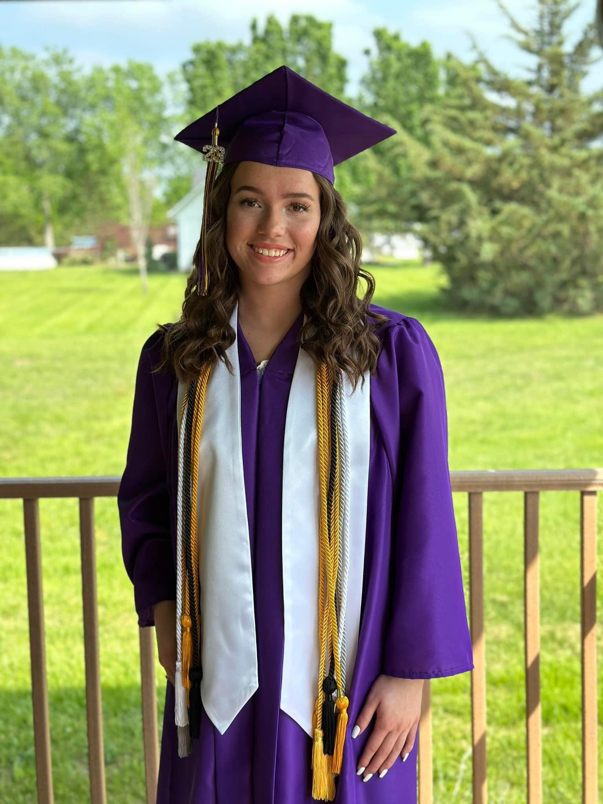
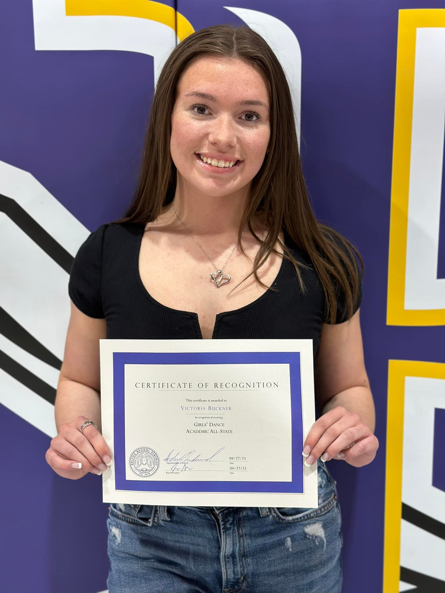
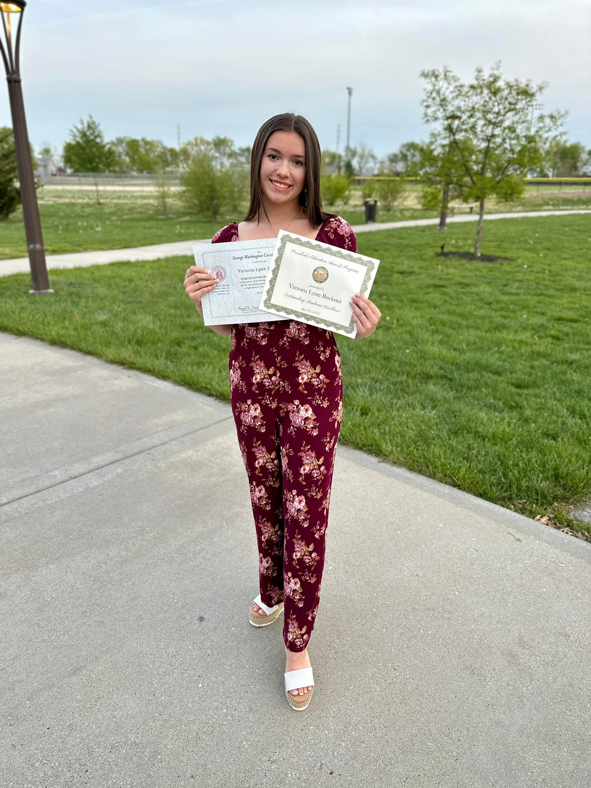
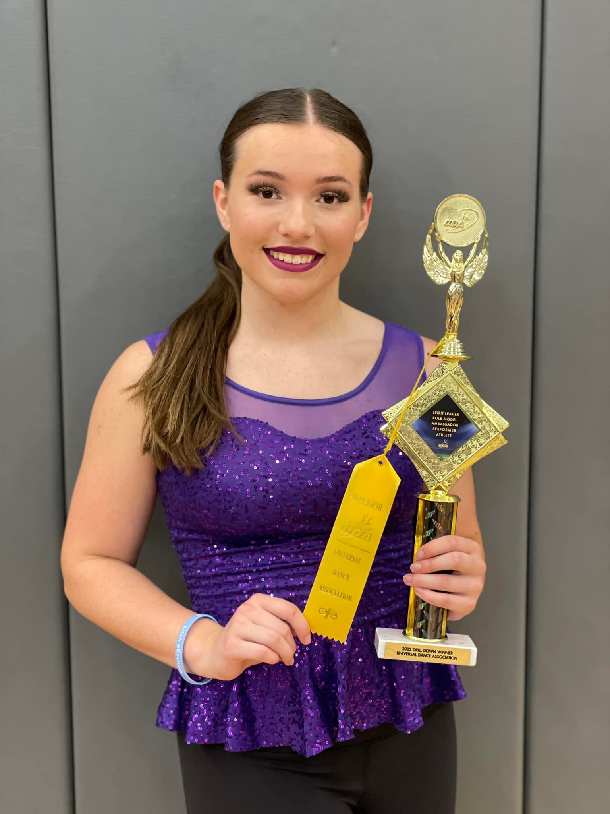

In high school I shared my time between academics and dance. I was in honor society and even a part of NSLS which is a college honor society through UCM since my freshman year of high school. I got a reward for my gpa through Belton and the Missouri State competition. Before I graduated I got the George Washington Carver award as well as the Outstanding Academic Excellence.



In high school dance team we did similar things to what I do now in college dance team. We would go to a camp for four days and stay in college dorms. I won drilldown queen at camp twice against the whole camp.We dance on the sidelines and at halftime at the football games and halftime at the basketball games. Then we would go into nationals season and compete at three regional competition and then nationals.